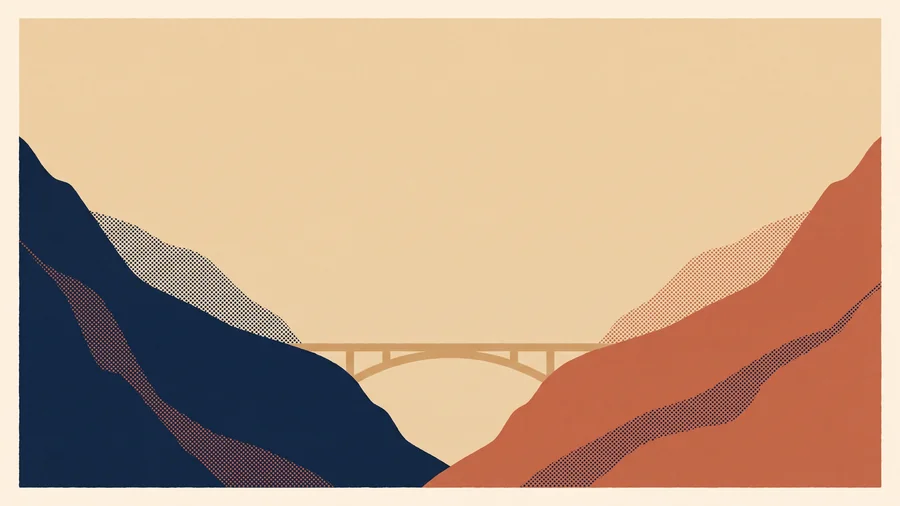
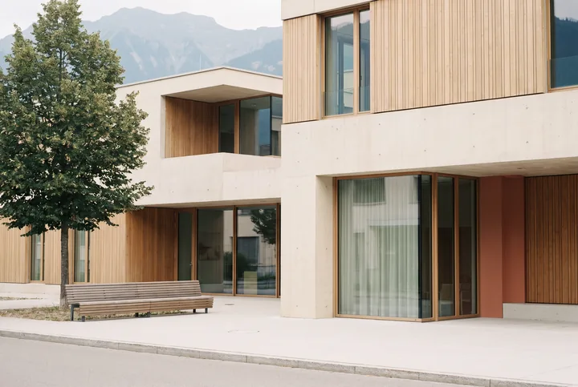

Vous payez une prime par personne et une participation aux coûts, et le formulaire S1 vous ouvre une carte Vitale
La LAMal est l’assurance maladie obligatoire suisse. Un frontalier qui l’a choisie paie une prime mensuelle par personne, indépendante de son revenu, fixée par la caisse en fonction de son pays de résidence — la France — et non de son canton de travail. Les prestations sont les mêmes d’une caisse à l’autre : c’est la loi qui les définit. Seule la prime varie, et l’écart entre caisses est considérable.
Concrètement, un frontalier adulte affilié à la LAMal garde à sa charge au maximum 1 000 CHF par an, soit 300 CHF de franchise et 700 CHF de quote-part, auxquels s’ajoutent 15 CHF par jour d’hôpital. Ce plafond résulte de la loi, ce n’est pas une estimation. En 2026, la franchise reste fixée à 300 CHF ; un projet fédéral la porterait à 400 CHF, mais il est encore en consultation et n’a pas été adopté.
Deux particularités surprennent les frontaliers, et souvent trop tard. La première est le tiers garant : chez le médecin ou le spécialiste, c’est vous qui recevez la facture et qui la payez, avant que la caisse vous rembourse sa part. Une consultation de spécialiste à Genève coûte de 150 à 300 CHF, et vous en faites l’avance. La seconde tient aux modèles à prime réduite (HMO, Telmed, médecin de famille), qui ne sont pas ouverts aux résidents de l’Union européenne : la prime affichée est bien celle que vous paierez.
Ce que la LAMal ne couvre pas
- Le dentaire courant n’est pas couvert — 0 CHF de la LAMal —, sauf en cas d’accident ou de maladie grave du système masticatoire. Une couronne à Genève coûte de 1 200 à 2 000 CHF.
- Les lunettes et les lentilles des adultes ne donnent droit à aucun remboursement, contre 180 CHF par an pour les enfants sur ordonnance.
- La chambre semi-privée ou privée reste à vos frais, car seule la division commune est couverte.
- Les médecines complémentaires pratiquées par un non-médecin — ostéopathe, psychologue, sophrologue — restent entièrement à votre charge.
- Les dépassements d’honoraires et une partie des frais de transport ne sont pas remboursés non plus.
Et en France ? Le formulaire S1 vous ouvre la carte Vitale
Votre caisse suisse vous délivre un document portable S1 (référence S072, ex-E106). Déposé à la CPAM de votre lieu de résidence, il vous ouvre des droits en France « pour le compte du régime suisse » : vous recevez une carte Vitale et vous êtes remboursé aux taux français — 70 % du tarif conventionnel chez le médecin, 80 % à l’hôpital — comme tout assuré social. Le tiers payant et la télétransmission Noémie fonctionnent normalement. Une complémentaire santé française peut donc compléter vos remboursements en France, à condition qu’elle sache aussi traiter les soins reçus en Suisse : c’est le point décisif pour la suite.
02 · La CMUVous cotisez à hauteur de 8 % de votre revenu fiscal, famille comprise, et vous êtes remboursé aux tarifs français
La « CMU frontalière » est l’affiliation à la Sécurité sociale française. Vous cotisez auprès de l’Urssaf, service des travailleurs frontaliers en Suisse (ex-CNTFS) et vous êtes remboursé par votre CPAM, avec une carte Vitale classique. La cotisation 2026 se calcule ainsi :
En France, vous êtes remboursé comme tout assuré du régime général
Une consultation de généraliste à 30 € vous est remboursée à 70 %, moins 2 € de participation forfaitaire, et le spécialiste suit la même base. L’hôpital est pris en charge à 80 %, avec un forfait journalier de 20 € par jour (valeur 2025, à vérifier pour 2026). La pharmacie est remboursée à 65, 30 ou 15 % selon le médicament, le dentaire sur des bases modestes, et l’optique presque pas en dehors du 100 % Santé. Vos besoins de couverture complémentaire en France sont donc ceux de tout assuré français : ticket modérateur, forfait journalier, dépassements d’honoraires, chambre particulière, dentaire et optique.
En Suisse, trois portes seulement vous sont ouvertes
- Pour des soins urgents ou médicalement nécessaires, y compris pendant une journée de travail, présentez votre carte européenne d’assurance maladie (CEAM). Ces soins sont réglés aux tarifs suisses par l’entraide entre régimes, mais vous en faites généralement l’avance et la Suisse retient une participation de 92 CHF par période de 30 jours, à laquelle s’ajoutent 15 CHF par jour d’hôpital ; ni la CPAM ni aucune complémentaire ne la rembourse.
- Les soins ambulatoires « en marge du travail » — une consultation ordinaire un jour ouvré, près de votre lieu de travail — n’exigent aucune autorisation préalable, mais ils forment une zone grise. Les HUG et la FER Genève parlent de tarifs suisses, ameli.fr de « législation française » ; en pratique, c’est le Centre national des soins à l’étranger qui tranche, et il peut rembourser au tarif français comme refuser le dossier.
- Les soins programmés — au moins une nuit d’hôpital ou un équipement lourd — exigent un formulaire S2, que vous demandez avant les soins au médecin-conseil de votre CPAM ; il répond sous 14 jours. Sans ce formulaire, rien ne vous est remboursé.
Tout le reste — la consultation de confort le samedi, l’IRM passée à Genève parce que le délai y est plus court — est remboursé sur le tarif français, soit environ 20 € pour une consultation facturée 250 CHF [calcul]. C’est la principale lacune du régime CMU pour qui vit près de la frontière et souhaite se soigner du côté suisse.
03 · Face à faceLes deux régimes se comparent poste par poste
| Poste | Affilié LAMal | Affilié CMU |
|---|---|---|
| Ce que vous payez au régime | Prime par personne, de 200 à 823 CHF par mois et par adulteEnfant à partir de 46 CHF, jeune adulte de 19 à 25 ans à partir de 180 CHF (Helsana 2026) | 8 % du revenu fiscal de référence, après un abattement de 12 015 €Ni le conjoint sans activité ni les enfants n’entraînent de surcoût |
| Reste à charge légal en Suisse | Franchise de 300 CHF, quote-part de 10 % plafonnée à 700 CHF et 15 CHF par jour d’hôpital | Participation « entraide » de 92 CHF par période de 30 jours et 15 CHF par jour, pour les soins urgents avec la CEAM |
| Soins courants en Suisse | Accès directVous avancez la facture en tiers garant, puis la caisse rembourse 90 % des frais au-delà de la franchise | LimitéUrgence avec la CEAM, soins « en marge du travail » en zone grise, et tarif français pour tout le reste |
| Hospitalisation en Suisse | La division commune est couverte, avec 15 CHF par jour à votre chargeLe privé et le semi-privé restent à vos frais | En urgence, la CEAM ; pour un séjour programmé, le formulaire S2 est obligatoireSans S2, rien n’est remboursé |
| Soins en France | Carte Vitale obtenue avec le formulaire S1, aux taux français de 70 % et 80 %Régime local en Alsace-Moselle | Carte Vitale, aux taux français de 70 % et 80 % |
| Dentaire et optique | 0 CHF en Suisse pour les adultes ; en France, les bases françaises s’appliquent grâce au S1 | Les bases françaises s’appliquent en France ; en Suisse, rien n’est pris en charge hors urgence |
| Changer de caisse ou de régime | Vous pouvez changer de caisse chaque 1er janvierLe retour à la CMU est impossible, sauf exceptions | Le passage à la LAMal est impossible, sauf exceptionsVoyez le droit d’option ci-dessous |
Sources : OFSP via compassurance.ch (primes 2026), FER Genève, ameli.fr, CLEISS, kvg.org, Urssaf. Détail et liens en bas de page.
Ce qu’il vous reste à payer, sans complémentaire puis avec ALPICARE
Nous prenons quatre cas concrets, deux en Suisse et deux en France, et pour chacun nous montrons ce que paie votre régime, ce qui reste à votre charge sans complémentaire, puis ce que rembourse le contrat Alptis Santé Frontaliers Suisses selon la formule ALPICARE choisie — Essentiel (Niveau 2), Confort (Niveau 3) ou Premium (Niveau 4). Les montants suisses sont exprimés en CHF ; Alptis rembourse en euros, au taux de la BCE du jour où vous avez payé. Nos conversions indicatives retiennent 1 CHF ≈ 1,07 €.
Vous consultez un spécialiste à Genève : la facture est de 300 CHF
- Ophtalmologue, dermatologue ou gynécologue
- Franchise LAMal de l’année déjà atteinte
- Exemple de la brochure Alptis 2025
| Qui paie quoi | Affilié LAMal | Affilié CMU · urgence (CEAM) | Affilié CMU · « en marge du travail » |
|---|---|---|---|
| Le régime de base paie | 270 CHF90 % de la facture | Le tarif suisse, moins 92 CHFParticipation due pour la période de 30 jours ; vous devrez probablement avancer les frais | ≈ 26 €70 % d’une base française de 40 €, moins 2 € de participation forfaitaire [hypothèse] |
| Reste sans complémentaire | 30 CHFLa quote-part de 10 % | 92 CHF | ≈ 295 €Sur ≈ 321 €, si le CNSE accepte le dossier |
| Avec ALPICARE EssentielAlptis Niveau 2 | 0 CHFLa quote-part est remboursée à 100 % | 92 CHFCette participation n’est jamais remboursée | ≈ 273 €125 % de la base française |
| Avec ALPICARE ConfortAlptis Niveau 3 | 0 CHFLa quote-part est remboursée à 100 % | 92 CHFCette participation n’est jamais remboursée | ≈ 243 €150 % de la base et 20 € par acte |
| Avec ALPICARE PremiumAlptis Niveau 4 | 0 CHFLa quote-part est remboursée à 100 % | 92 CHFCette participation n’est jamais remboursée | ≈ 213 €200 % de la base et 30 € par acte |
La colonne LAMal reprend l’exemple chiffré de la brochure Alptis 2025 (Niveau 4, la quote-part étant identique à tous les niveaux). En début d’année, si votre franchise n’est pas encore consommée, les 300 premiers CHF restent à votre charge quel que soit le contrat. La colonne CMU « urgence » retient la participation de 92 CHF par période de 30 jours prélevée par l’Institution commune LAMal (kvg.org), que ni la CPAM ni le contrat ne remboursent (notice Alptis). La colonne CMU « en marge du travail » repose sur un calcul ALPICARE, avec une base de remboursement de 40 € (exemple UNOCAM d’une consultation de spécialiste), un taux de 1,07 € pour 1 CHF et un dossier accepté par le CNSE ; le CNSE peut aussi refuser le dossier ou retenir une autre base. En dehors de l’urgence et de la marge du travail — une consultation choisie un samedi, par exemple —, la CPAM rembourse au tarif français et le contrat ne prévoit aucune ligne dédiée : comptez environ 295 € à votre charge.
Ce que ALPICARE rembourse. Pour un affilié LAMal, le contrat rembourse la totalité de la quote-part, du niveau 1 au niveau 6 : monter de niveau ne vous apporte rien de plus en Suisse. Pour un affilié CMU, il n’efface pas l’écart entre le tarif suisse et la base française, mais il l’amortit, surtout grâce au forfait par acte des niveaux 3 et 4. Dans les deux cas, vous avancez la facture, puis vous envoyez à Alptis la facture détaillée, le décompte original de votre régime et le reçu, car aucune télétransmission n’existe avec la Suisse.
Vous êtes hospitalisé deux jours en division commune : la facture atteint 7 500 CHF
- Adulte de 25 ans ou plus (contribution journalière due)
- Hôpital public ou de la liste cantonale, chambre commune
- Exemple de la brochure Alptis 2025
| Qui paie quoi | Affilié LAMal | Affilié CMU · urgence (CEAM) | Affilié CMU · séjour programmé |
|---|---|---|---|
| Le régime de base paie | 6 770 CHFLa facture, moins la quote-part plafonnée et deux contributions journalières | Le tarif suisse, moins 92 CHF et deux fois 15 CHFL’hôpital peut exiger une garantie de paiement | Si le formulaire S2 est accordé, la CPAM prend le séjour en chargeSans S2, rien n’est pris en charge |
| Reste sans complémentaire | 730 CHF700 CHF de quote-part et 30 CHF de contribution journalière | 122 CHF | 7 500 CHF sans S2Avec un S2, selon la base retenue par la CPAM |
| Avec ALPICAREEssentiel, Confort ou Premium | 0 CHF730 CHF remboursés, soit environ 781 €, à tous les niveaux | 122 CHFCette participation n’est jamais remboursée | 7 500 CHF sans S2Avec un S2, le complément de la part CPAM est à préciser avec nous avant le séjour |
La colonne LAMal reprend la brochure Alptis 2025, « hors éventuelle franchise LAMal annuelle de 300 CHF par assuré adulte » ; la vérification est simple, puisque 10 % de 7 500 CHF font 750 CHF, plafonnés à 700 CHF. La colonne CMU « urgence » applique la participation de 92 CHF par période de 30 jours et les 15 CHF par jour dus dès 25 ans (kvg.org, notice Alptis). Pour la colonne « programmé », le S2 se demande avant les soins et la réponse arrive sous 14 jours ; la notice Alptis détaille le complément des soins « inopinés », mais pas celui d’un séjour programmé sous S2, et nous le faisons confirmer par Alptis avant votre admission.
Ce que ALPICARE rembourse. Pour un affilié LAMal, c’est le cœur du contrat : la quote-part et la contribution journalière sont remboursées à 100 %, sans limite de durée indiquée, dès le premier niveau. Deux points ne changent pas avec la complémentaire : la franchise de 300 CHF n’est jamais remboursée, et aucune prise en charge hospitalière directe n’existe en Suisse, si bien que vous réglez la facture, ou que l’hôpital demande une garantie, avant qu’Alptis rembourse sur décompte. Un séjour en chambre privée ou semi-privée reste entièrement à vos frais. Pour un affilié CMU, retenez l’ordre des démarches : la CEAM pour l’urgence, le S2 pour un séjour programmé, et dans les deux cas la participation suisse reste due.
Vous faites poser une couronne dentaire en France : 550 €
- Couronne céramo-métallique hors panier 100 % Santé
- Base de la Sécurité sociale de 120 €, remboursée 72 €
- Résultat identique pour un affilié LAMal, via le S1, ou CMU
| Qui paie quoi | En France, 1re et 2e année | En France, après 2 ans d’adhésion | Même couronne posée en Suisse |
|---|---|---|---|
| Le régime de base paie | 72 €60 % de la base de 120 € | 72 € | 0 CHFNi la LAMal ni la CPAM ne remboursent hors urgence ; comptez de 1 200 à 2 000 CHF à Genève |
| Reste sans complémentaire | 478 € | 478 € | 100 % du prix |
| Avec ALPICARE EssentielAlptis Niveau 2 · 150 % de la base | 370 €Alptis verse 108 € | 310 €Alptis verse 168 €, bonus de fidélité de +50 % compris | 100 % du prixLe contrat 2025 ne prévoit aucun forfait dentaire en Suisse |
| Avec ALPICARE ConfortAlptis Niveau 3 · 175 % de la base | 340 €Alptis verse 138 € | 280 €Alptis verse 198 €, bonus de fidélité de +50 % compris | 100 % du prix |
| Avec ALPICARE PremiumAlptis Niveau 4 · 225 % de la base | 280 €Alptis verse 198 € | 220 €Alptis verse 258 €, bonus de fidélité de +50 % compris | 100 % du prix |
Ces chiffres viennent de la brochure Alptis 2025 (couronne à 550 €, Sécurité sociale 72 €, Alptis 258 € au Niveau 4 avec le bonus de fidélité, reste à charge 220 €) et des exemples UNOCAM du 10 juillet 2025 (couronne céramo-métallique, base de 120 €). Les pourcentages comprennent la part du régime de base ; le bonus de fidélité, qui ajoute +50 % de la base aux niveaux 2 à 4, s’applique après deux ans d’adhésion du bénéficiaire et repart de zéro à chaque changement de niveau. Le plafond dentaire annuel hors soins s’élève à 900, 1 100 ou 1 200 € les deux premières années, puis à 1 350, 1 650 ou 1 950 €. Une couronne du panier 100 % Santé est, elle, prise en charge aux frais réels et ne vous laisse aucun reste à charge.
Ce que ALPICARE rembourse. Le dentaire est le poste qui ramène vers la France le frontalier affilié à la LAMal : à Genève, la LAMal ne rembourse rien, alors qu’à Annemasse ou à Saint-Louis vous obtenez une base française et un complément d’Alptis. Le contrat rembourse la même chose pour les deux régimes, mais seulement pour des soins reçus en France. C’est aussi le poste où il vaut la peine de viser juste dès le départ, puisque le bonus de fidélité récompense l’ancienneté au même niveau.
Vous achetez des lunettes à verres progressifs : 640 €
- Verres complexes et monture, hors panier 100 % Santé
- Adulte, un équipement tous les deux ans
- Exemple UNOCAM 2025
| Qui paie quoi | Achetées en France | Achetées en Suisse |
|---|---|---|
| Le régime de base paie | ≈ 0 €0,09 € dans l’exemple UNOCAM ; le montant est le même pour un affilié LAMal, via le S1, ou CMU | 0 CHFLa LAMal ne rembourse pas les lunettes des adultes, contre 180 CHF par an pour les enfants, et la CPAM non plus |
| Reste sans complémentaire | ≈ 640 € | 100 % du prix |
| Avec ALPICARE EssentielAlptis Niveau 2 · forfait de 200 € pour des verres complexes | ≈ 440 € | 100 % du prixLes forfaits optiques ne s’utilisent qu’en France |
| Avec ALPICARE ConfortAlptis Niveau 3 · forfait de 325 € pour des verres complexes | ≈ 315 € | 100 % du prix |
| Avec ALPICARE PremiumAlptis Niveau 4 · forfait de 450 € pour des verres complexes, porté à 475 € dans l’exemple UNOCAM | ≈ 165 € | 100 % du prix |
L’exemple UNOCAM porte sur des « verres progressifs et une monture hors 100 % Santé, à 640 € » : Alptis prend en charge 200 € au Niveau 2, 325 € au Niveau 3 et 475 € au Niveau 4, ce dernier montant correspondant à la ligne « 1 verre complexe et 1 très complexe » de la grille. La monture est plafonnée à 100 € dans le forfait, et vous avez droit à un équipement tous les deux ans, ou tous les ans avant 16 ans et en cas d’évolution de la vue. Un équipement 100 % Santé de classe A est pris en charge aux frais réels. Pour des verres simples, les forfaits s’élèvent à 125, 225 et 325 €.
Ce que ALPICARE rembourse. Le contrat verse un forfait par équipement, pour les deux régimes, chez un opticien français. Il ne verse rien pour des lunettes achetées à Genève ou à Bâle, car il a limité les forfaits optiques à la France en 2025. Si vous vous équipez surtout en Suisse, indiquez-le dans le simulateur : il tiendra compte de ce que le contrat ne couvre pas.

Un seul contrat, Alptis Santé Frontaliers Suisses, couvre les deux régimes
ALPICARE ne fabrique pas d’assurance. Nous distribuons le contrat collectif Santé Frontaliers Suisses, conçu et géré par Alptis Assurances et assuré par CNP Assurances, sans ajouter aucuns frais. Le contrat, l’assureur et la gestion étant les mêmes, ce qui suit vaut quel que soit le canal par lequel vous adhérez.
Pour un affilié LAMal
- Pour vos soins en Suisse, la quote-part et la contribution journalière vous sont remboursées à 100 %, du niveau 1 au niveau 6. La quote-part représente 10 % des frais, dans la limite de 700 CHF par adulte et 350 CHF par enfant ; la contribution journalière est de 15 CHF par jour.
- Pour vos soins en France, la carte Vitale obtenue avec le formulaire S1 vous ouvre un complément de la part CPAM, exprimé en pourcentage de la base française, avec le tiers payant et la télétransmission.
- Les médecines complémentaires suivies en France ou en Suisse vous sont remboursées 30, 40 ou 50 € par séance selon la formule Essentiel, Confort ou Premium, dans la limite de 4 séances par an. S’y ajoute un forfait pour les transports que la LAMal ne couvre pas : 50 € par an avec Confort et 100 € par an avec Premium.
Pour un affilié CMU
- Quand la CPAM prend en charge des soins ou une hospitalisation urgents ou inopinés en Suisse, le contrat complète jusqu’à 125, 150 ou 200 % de la base française selon la formule.
- Les soins ambulatoires « en marge du travail » sont remboursés à 125, 150 ou 200 % de la base, auxquels s’ajoutent 20 € par acte avec Confort et 30 € par acte avec Premium.
- En France, vous bénéficiez des mêmes garanties qu’un affilié LAMal, dans le cadre d’un contrat responsable et du 100 % Santé.
Ce que le contrat ne rembourse jamais
- La franchise LAMal de 300 CHF par adulte, quel que soit le niveau.
- Les séjours en chambre privée ou semi-privée en Suisse.
- Les lunettes, le dentaire et la pharmacie achetés en Suisse, les forfaits ne s’utilisant qu’en France.
- La participation « entraide » des affiliés CMU, soit 92 CHF par période de 30 jours et 15 CHF par jour d’hôpital.
- Un séjour programmé en Suisse sans formulaire S2 pour un affilié CMU.
Deux autres assureurs, MMA et La Frontalière, proposent de couvrir la franchise LAMal ; nous ne les distribuons pas, et nous vous le disons. Un affilié LAMal en bonne santé, soigné uniquement en Suisse, peut d’ailleurs n’avoir besoin d’aucune complémentaire : notre simulateur peut recommander « un niveau plus bas » ou « aucune complémentaire ».
Essentiel
Alptis Santé Frontaliers Suisses · Niveau 2. Pour un affilié LAMal soigné surtout en Suisse, qui porte des lunettes ou consulte un ostéopathe, et pour un jeune actif affilié à la CMU.
37,70 € par mois · tarif visé pour 2026*
Confort
La plus demandéeAlptis Santé Frontaliers Suisses · Niveau 3. Pour qui se soigne des deux côtés de la frontière, porte des lunettes, prévoit des soins dentaires d’ici deux ou trois ans et a des enfants.
47,00 € par mois · tarif visé pour 2026*
Premium
Alptis Santé Frontaliers Suisses · Niveau 4. Pour qui attend des prothèses ou des implants dans l’année, porte des verres complexes ou finance une orthodontie.
57,90 € par mois · tarif visé pour 2026*
* Ces tarifs 2026 sont indicatifs pour un adulte et varient selon l’âge et le régime. Ils s’entendent hors cotisation d’association Alptis Frontaliers, de 2 € par mois, et hors droit d’entrée de 11 €. Nous vous remettons un devis personnalisé avant l’adhésion.
06 · Changer de régimeLe droit d’option est irrévocable, sauf trois exceptions : nous vous les détaillons
Avant de choisir, comparez les deux coûts pour votre foyer : d’un côté, la prime LAMal de chaque personne — retenez la caisse la moins chère, puisque les garanties sont identiques — à laquelle s’ajoutent jusqu’à 1 000 CHF de participation par adulte ; de l’autre, 8 % de votre revenu fiscal au-delà de 12 015 €, sans supplément pour le conjoint ni pour les enfants. Pesez aussi vos habitudes de soins : la LAMal vous ouvre l’accès direct aux médecins suisses, tandis que la CMU vous ramène en France pour tout ce qui n’est ni urgent ni « en marge du travail ». Tenez enfin compte de l’échéance de 2028, à laquelle les primes LAMal des frontaliers devraient augmenter.
Ce que fait ALPICARE si votre situation change. Le contrat Alptis couvre les deux régimes, y compris au sein d’une même famille. Si vous passez de l’un à l’autre — ou si votre conjoint et vos enfants relèvent d’un autre régime que vous —, prévenez-nous : la cotisation dépend du régime et Alptis la recalcule ; d’un régime à l’autre, vos garanties en France restent identiques, seules changent celles qui jouent en Suisse. Nous ne vous conseillons pas sur le choix entre la LAMal et la CMU lui-même : parlez-en à votre caisse, à votre CPAM ou au service des frontaliers de l’Urssaf, avec les repères de ce guide.
07 · LexiqueLes mots que vous croiserez
- Formulaire S1 (S072, ex-E106)
- Document délivré par votre caisse LAMal, à déposer à la CPAM : il vous donne une carte Vitale et des remboursements français, pour le compte du régime suisse.
- CEAM
- Carte européenne d’assurance maladie, gratuite, valable deux ans, à demander à votre CPAM : elle ouvre la prise en charge des soins urgents ou médicalement nécessaires en Suisse pour un affilié CMU.
- Formulaire S2
- Autorisation préalable de la CPAM pour des soins programmés à l’étranger, qu’il s’agisse d’une hospitalisation d’au moins une nuit ou d’un équipement lourd. La CPAM répond sous 14 jours, et sans ce formulaire elle ne rembourse rien.
- Tiers garant
- Système suisse où le patient reçoit et paie la facture, puis se fait rembourser par sa caisse. À l’inverse du tiers payant français, où le professionnel est payé directement.
- Franchise, quote-part, contribution journalière
- Les trois participations aux coûts de la LAMal : 300 CHF par an, puis 10 % des frais plafonnés à 700 CHF, puis 15 CHF par jour d’hôpital. Seule la première n’est jamais remboursée par une complémentaire santé Alptis.
- Participation « entraide »
- Les 92 CHF par période de 30 jours, ou 33 CHF pour un enfant, et les 15 CHF par jour d’hôpital retenus par l’Institution commune LAMal quand un affilié CMU se fait soigner en Suisse avec sa CEAM. Personne ne les rembourse.
- Base de remboursement (BRSS) et OPTAM
- Le tarif de référence de la Sécurité sociale, sur lequel se calculent les pourcentages du contrat, part CPAM comprise. L’OPTAM est un dispositif de modération des dépassements d’honoraires ; les praticiens qui n’y adhèrent pas sont moins bien remboursés.
- Bonus fidélité dentaire
- Majoration de +50 % de la base, aux niveaux 2 à 4, sur les prothèses et l’orthodontie, acquise après deux ans d’adhésion au même niveau. Tout changement de niveau remet le compteur à zéro.
D’où viennent ces chiffres
Toutes les valeurs de ce guide sont reprises des documents ci-dessous, consultés le 5 septembre 2026. Les mentions « [calcul] » et « [hypothèse] » signalent nos propres calculs, dont les hypothèses sont écrites à côté. Le taux de change de 1 CHF pour 1,07 € est indicatif.
- Alptis / CNP Assurances — Notice d’information « Santé Frontaliers Suisses » (réf. SF_Suisses, 2025) : descriptif des prestations, exclusions, conditions d’adhésion. notice (PDF, 52 p.)
- Alptis — IPID « Santé Frontaliers Suisses » (04/2025). radiance.fr (PDF)
- Alptis — Brochure « Santé Frontaliers Suisses » 2025 : exemples de remboursement pour une consultation à 300 CHF, une hospitalisation à 7 500 CHF et une couronne à 550 €. alptis.org
- Alptis — Exemples de remboursement UNOCAM « Santé Frontaliers Suisses » (10 juillet 2025) : couronne céramo-métallique, verres progressifs à 640 € et consultation de spécialiste sur une base de 40 €. alptis.org (PDF)
- Alptis — Guides frontaliers : la franchise et la quote-part de la LAMal, les soins à l’étranger, l’hospitalisation en Suisse, et le choix entre Sécurité sociale et LAMal. alptis.org
- ameli.fr — Travailleur frontalier suisse : droits et prise en charge, avec le droit d’option, la CEAM, le formulaire S2 et les soins non urgents. ameli.fr
- HUG — « Vous êtes frontalier, comment être soigné aux HUG ? » (juin 2021). hug.ch (PDF)
- FER Genève — Formation « Assurance maladie des frontaliers » (Riondel-Besson, Zappella, 2023). fer-ge.ch (PDF)
- Institution commune LAMal (kvg.org) — Participations aux coûts : 92 CHF par période de 30 jours, 33 CHF pour un enfant et 15 CHF par jour ; franchise de 300 CHF, quote-part de 10 % plafonnée à 700 CHF par adulte et 350 CHF par enfant. kvg.org
- CLEISS — Couverture maladie en Suisse (CEAM). cleiss.fr
- compassurance.ch — Primes LAMal des frontaliers en 2026, caisse par caisse, d’après les tarifs approuvés par l’OFSP ; quote-part LAMal ; coût de la CMU. compassurance.ch
- Urssaf — Travailleur frontalier suisse : comment déclarer ses revenus. urssaf.fr
- Légifrance — Arrêté du 22 décembre 2025 fixant le plafond de la Sécurité sociale pour 2026, soit 48 060 €. legifrance.gouv.fr
- Régime local Alsace-Moselle — FAQ officielle (frontaliers affiliés à la LAMal). regime-local.fr
- GTE (frontalier.org) — Les primes LAMal de 2026 connaissent une année quasi blanche avant la réforme de 2028. frontalier.org
- RTS — Le Conseil fédéral veut faire passer la franchise de 300 à 400 francs (2026). rts.ch
- Redent Klinik — Prix des soins dentaires en Suisse, une couronne coûtant de 1 200 à 2 000 CHF. redentklinik.com
- frontaliers-grandest.eu — Formulaire S2 et soins des frontaliers suisses. frontaliers-grandest.eu
Ce guide est une information générale, et non un conseil personnalisé sur le choix de votre régime d’assurance maladie. ALPICARE distribue les contrats d’Alptis et ne propose pas d’analyse impartiale du marché. Les règles de la CMU et de la LAMal évoluent : vérifiez les montants de l’année auprès de votre caisse, de votre CPAM ou de l’Urssaf.